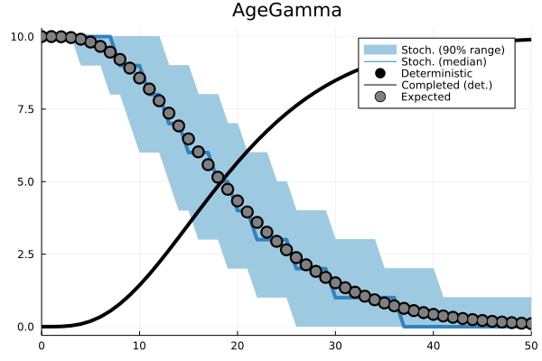
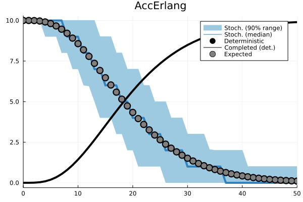
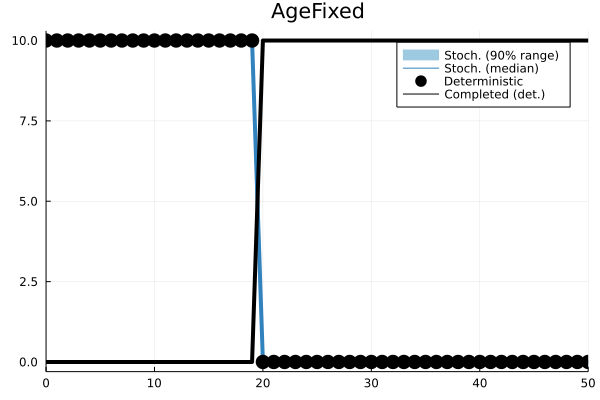

SPoP2.jl

This is the standalone Julia library of the dynamically-structured matrix population model sPop2. This version implements both age-dependent and accumulative processes.
Installation
Just type this in Julia:
using Pkg
Pkg.add("SPoP2")Using the library
The following creates a pseudo-structured population with 10 individuals and iterates it one step with 0 mortality and an Erlang-distributed development time of 20 ± 5 steps.
pop = Population(PopDataSto())
AddProcess(pop, AccErlang())
AddPop(pop, 10)
pr = (devmn=20.0, devsd=5.0)
size, completed, poptabledone = StepPop(pop, pr)See section Usage examples for further examples.
References
- Erguler, K., Mendel, J., Petrić, D.V. et al. A dynamically structured matrix population model for insect life histories observed under variable environmental conditions. Sci Rep 12, 11587 (2022). link
- Erguler K. sPop: Age-structured discrete-time population dynamics model in C, Python, and R [version 3; peer review: 2 approved]. F1000Research 2020, 7:1220. link
Usage examples
Let’s begin with a canonical example. Arguably, the straightforward way to model insect development is to use an ordinary differential equations system with exponentially distributed transition times.
A deterministic ODE model of larva development
Let’s assume that experimental observations of larva development yielded a round figure of 20 days as average development time. This is usually translated to the differential equations reals as an instantaneous rate of α = 1/20.
using DifferentialEquations
function develop!(du,u,p,t)
du[1] = -(1.0/20.0)*u[1]
du[2] = (1.0/20.0)*u[1]
end
u0 = [100.0; 0.0;]
tspan = (0.0, 100.0)
prob = ODEProblem(develop!,u0,tspan)
sol = solve(prob)
Expectedly, this implies that larvae begin developing by the time they emerge from eggs, and keep producing pupae at the same constant rate until a negligible number of larvae is left.
A deterministic population with Erlang-distributed accumulative development
An alternative representation with a structured population can be constructed using sPop2. For this, we need to know not the rate of pupa production, but the average duration of the larva stage and its variation. Let’s assume that stage duration follows a gamma distribution (Erlang to be precise), which implies that all individuals race to develop out of the larva stage, while some are faster and even more of them are slower.
pop = Population(PopDataDet())
AddProcess(pop, AccErlang())
AddPop(pop, 10.0)
out = [0 10.0 0.0]
for n in 1:50
pr1 = (devmn=20.0, devsd=5.0)
ret = StepPop(pop, pr1)
out = vcat(out, [n ret[1] ret[2]])
endAccounting for stochasticity
With a simple modification, we can simulate how the dynamics vary when each individual is given a daily chance of completing its development based on the Erlang-distributed development time assumption.
pop = Population(PopDataSto())
AddProcess(pop, AccErlang())
AddPop(pop, 10)
outst = [0 10 0.0]
for n in 1:50
pr1 = (devmn=20.0, devsd=5.0)
ret = StepPop(pop, pr1)
outst = vcat(outst, [n ret[1] ret[2]])
end
Distributions and assumptions
SPoP2 allows for age-dependent and accumulative development times.
| Process | Parameters | Definition |
|---|---|---|
| AccErlang | devmn, devsd | Erlang-distributed accumulative process |
| AccPascal | devmn, devsd | Pascal-distributed accumulative process |
| AccFixed | devmn | Fixed-duration accumulative process |
| AgeFixed | devmn | Pascal-distributed age-dependent process |
| AgeConst | prob | Constant-rate age-dependent process |
| AgeGamma | devmn, devsd | Gamma-distributed age-dependent process |
| AgeNbinom | devmn, devsd | Negative binomial-distributed age-dependent process |
| Age-dependent | Accumulative |
|---|---|
|  |  |
 |
 |
|  |  |
 |
Combining multiple processes
Multiple processes can be added to a Population to represent more complex dynamics. For instance, we can represent survival with a daily constant rate and development with an Erlang-distributed accumulative process. The processes are executed in the order they are added to the Population.
a = Population(PopDataDet())
AddProcess(a, AgeConst(), AccErlang())
AddPop(a, 100.0)
ret = [0 GetPop(a) 0.0 0.0]
for i in 0:100
pr1 = (prob=1.0/60.0,)
pr2 = (devmn=30.0, devsd=5.0)
out = StepPop(a, pr1, pr2)
ret = vcat(ret, [i+1 out[1] out[2][1] out[2][2]])
endThe above instruction represent a life stage with 0.017 daily mortality and 30 ± 5 days of development time.
Gonotrophic cycle with a negative impact of ovipositioning
In this section, we will attempt to reproduce Figure 1 in the original age-dependent sPop model. We will represent an adult female mosquito with a lifetime of 20 ± 2 days. The female enters a cyclic process of obtaining bloodmeal and egg development, which takes about 2 days. However, at the end of each ovipositioning, her expected lifetime decreases by 2 days. I assure you that the actual physiology is far more complicated than this!
In order to represent the lifetime of this female mosquito, we will employ 3 processes:
- A custom age- and ovipositioning-dependent mortality process
- An age-dependent gamma-distributed egg development process
- A dummy process to count the number of ovipositioning events
# Declare a population with deterministic dynamics
a = Population(PopDataDet())
# Define three processes in this order: Mortality, Gonotropic cycle, Ovipositioning
AddProcess(a, AgeCustom(custom, AgeStepper), AgeGamma(), AgeDummy())The 3rd process is a dummy (AgeDummy), which does not affect the population or even does not posess a time counter. The 2nd process is the regular age-dependent gamma-distributed development process (AgeGamma).
The mortality process, on the other hand, is defined with a custom function and uses the AgeStepper. We included this stepper in process declaration, because we require that the status indicator be an age counter, i.e. the number of steps the Population is iterated is kept in the status indicator (see qkey below). We declare the custom function as the following.
function custom(heval::Function, d::Number, q::Number, k::Number, theta::Number, qkey::Tuple)
devmn = 480.0 - (qkey[3] > 4 ? 240.0 : 48.0 * qkey[3])
devsd = 0.1 * devmn
pr = (devmn=devmn, devsd=devsd)
k, theta, stay = SPoP2.age_gamma_pars(pr)
return SPoP2.age_hazard_calc(SPoP2.age_gamma_haz, 0, qkey[1], k, theta, qkey)
endWith this function, we override an internal mechanism used by all other processes to calculate the probability of exit (need this be due to mortality, development, or something else) from the Population. This generic functional form takes the following parameters.
- heval is a function to calculate the cumulative probability density of an exit event. It may use some of the other parameters to do so.
- d refers to the number of days (more correctly time steps) elapsed in Population.
- q refers to the fraction of development (used in accumulative processes).
- k and theta are the parameters of the stage duration (development time) distribution.
- qkey is a tuple of status indicators (age for age-dependent and development fraction for accumulative processes)
Of all these, we use the status indicators to calculate the mean and standard deviation of mortality based on the third (dummy) process.
devmn = 480.0 - (qkey[3] > 4 ? 240.0 : 48.0 * qkey[3]) # qkey[3]: Ovipositioning
devsd = 0.1 * devmn
pr = (devmn=devmn, devsd=devsd)Then, we calculate the parameters of the corresponding gamma distribution using the internal function
k, theta, stay = SPoP2.age_gamma_pars(pr)and, with these, we calculate the cumulative probability of daily mortality
SPoP2.age_hazard_calc(SPoP2.age_gamma_haz, 0, qkey[1], k, theta, qkey) # qkey[1]: MortalityOverall, the script to model the dynamics is given below.
function custom(heval::Function, d::Number, q::Number, k::Number, theta::Number, qkey::Tuple)
devmn = 480.0 - (qkey[3] > 4 ? 240.0 : 48.0 * qkey[3])
devsd = 0.1 * devmn
pr = (devmn=devmn, devsd=devsd)
k, theta, stay = SPoP2.age_gamma_pars(pr)
return SPoP2.age_hazard_calc(SPoP2.age_gamma_haz, 0, qkey[1], k, theta, qkey)
end
a = Population(PopDataDet())
# Mortality, Gonotropic cycle, Ovipositioning
AddProcess(a, AgeCustom(custom, AgeStepper), AgeGamma(), AgeDummy())
AddPop(a,1000.0)
ret = [0 0.0]
for i in 0:480
pr1 = NamedTuple{}()
pr2 = (devmn=50.0, devsd=10.0)
out = StepPop(a, pr1, pr2, pr1)
for (q,n) in out[3][2]
# Please note that this step is essential!
AddPop(a, n, q.key[1], 0, q.key[3]+one(q.key[3]))
end
ret = vcat(ret, [i+1 out[2][2]])
end
return retAt each step, StepPop returns the following tuple
- Current size off the population.
- Number of individuals completing each process in the given order.
- An array of (status indicators - number of individuals) pairs for each process.
The script adds all individuals completing a gonotrophic cycle (out[3][2]) back to the Population one by one. While doing so, their status indicators are updated manually.
- n individuals are added
- Mortality indicator is left unchanged (q.key[1])
- Egg development indicator is reset
- Ovipositioning indicator is incremented (q.key[3] + one(q.key[3]))